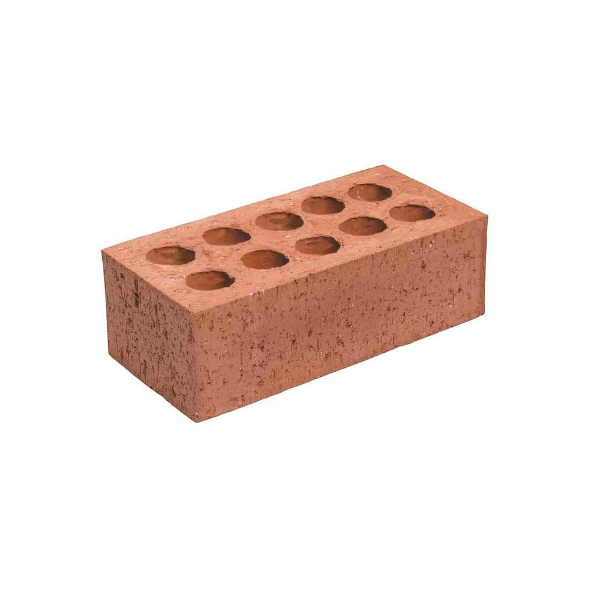

A tégla egy egyszerű, téglatest alakú építőelem, amelyet égetett agyagból készítenek. Színe többnyire vörösesbarna, felülete enyhén érdes, sarkai kissé lekerekedhetnek a gyártás vagy a használat során. Mérete szabványos, így könnyen illeszkedik más téglákhoz, és stabil falazatot alkot.
Nincs rajta semmilyen különleges minta vagy díszítés, csupán a funkcióját szolgálja: erős, tartós, és évtizedekig képes ellenállni az időjárás viszontagságainak. Egyedül talán a súlya és a hideg tapintása árulkodik arról, hogy valóban ott van a kezedben – egy egyszerű, hétköznapi, „unalmas” tégla, amely csendben, észrevétlenül tartja össze a világot.

További információt a téglákról IDE kattintva találhatsz
| Mennyiség | Ár |
| 1db | 10 Ft |
| 10db | 100 Ft |
| 100db | 1000 Ft |
| 1000db | 10000Ft |